콘크리트기사 (2018-08-19 기출문제)
1과목: 재료 및 배합
1. KS F 4009에는 레디믹스트 콘크리트의 혼합에 사용되는 물에 규정하고 있다. 다음 중 레디믹스트 콘크리트에 사용할 수 없는 혼합수는?
- 염소 이온(Cl")량이 300mg/L인 지하수
- 혼합수로서 품질시험을 실시하지 않은 상수돗물
- 용해성 증발 잔류물의 양이 1g/L인 하천수
- 모르타르의 재령 7일 및 28일 압축강도비가 90%인 회수수
(정답률: 89%)

2. 콘크리트의 배합강도를 결정할 때 적용하는 압축강도의 표준편차에 대한 설명으로 틀린 것은?
- 콘크리트 압축강도의 표준편차는 실제 사용한 콘크리트의 30회 이상의 시험실적으로부터 결정하는 것을 원칙으로 한다.
- 콘크리트 압축강도의 시험횟수가 29회 이하이고 15회 이상인 경우 그것으로 계산한 표준편차에 보정계수를 곱한 값을 표준편차로 사용할 수 있다.
- 콘크리트 압축강도의 시험횟수가 15회인 경우 표준편차의 보정계수는 1.16을 적용한다.
- 콘크리트 압축강도의 시험횟수가 20회인 경우 표준편차의 보정계수는 1.⑤를 적용한다.
(정답률: 78%)
3. 콘크리트 실리카 퓸(KS F 2567)의 품질시험을 위하여 사용하는 시험 모르타르에 대한 아래 표의 설명에서 ()안에 들어갈 알맞은 비율은?
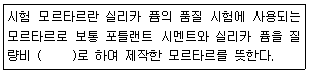
- 9:1
- 8:2
- 7:3
- 6:4
(정답률: 84%)
4. 플라이 애시를 사용한 콘크리트의 성질에 대한 설명으로 틀린 것은?
- 워커빌리티를 개선하여 공기량의 발생이 많아 소요의 공기량을 얻기 위한 AE제 양을 줄일 수 있다.
- 플라이 애시 첨가 콘크리트의 강도는 초기재령에서는 비교적 일반콘크리트보다 작으나, 재령이 길어짐에 따라 포졸란 반응의 증가에 의해 장기강도는 증가한다.
- 플라이 애시 첨가 콘크리트는 수화열에 의한 균열을 방지할 수 있어 댐과 같은 매스콘크리트 등에 사용된다.
- 플라이 애시는 알칼리 골재반응에 의한 팽창을 억제하는 효과가 있다.
(정답률: 62%)
5. 시멘트의 응결에 대한 설명으로 틀린 것은?
- 수량이 많으면 응결은 지연된다.
- C2S가 많을수록 응결을 빨라진다.
- 온도가 높을수록 응결은 빨라진다.
- 분말도가 높으면 응결을 빨라진다.
(정답률: 64%)
6. 시방서에 규정된 콘크리트 배합의 표시 사항에 해당되지 않는 것은?
- 골재의 단위량
- 슬럼프
- 공기량
- 혼합수의 염분량
(정답률: 56%)
7. 콘크리트 배합 시 슬럼프에 대한 다음 설명 중 올바르지 않은 것은?
- 슬럼프 값이 너무 작으면 타설이 곤란하다.
- 슬럼프 값은 타설장소에서의 값이 중요하다.
- 슬럼프 값은 진동기 사용 등 다짐방법에 의해서도 변하게 된다.
- 콘크리트의 운반시간이 길어지면 슬럼프 값이 증가하는 경향이 있다.
(정답률: 87%)
8. 콘크리트의 설계기준 압축강도(fck)가 20MPa인 콘크리트를 제작하기 위한 배합강도는?
- 27MPa
- 28.5MPa
- 30MPa
- 31.5MPa
(정답률: 74%)
9. 아래의 표에서 설명하고 있는 시멘트는?
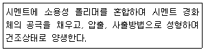
- DSP시멘트
- 벨라이트시멘트
- MDF시멘트
- 팽창시멘트
(정답률: 64%)
10. 황산나트륨 포화용액을 사용한 골재의 안정성 시험에서 반복 시험을 실시할 경우 황산나트륨 포화용액의 골재에 대한 잔류 유무를 조사하여야 하는데 이 때 사용하는 용액에 대한 설명으로 옳은 것은?
- 탄닌산 용액을 사용하며, 용액의 농도응 2~3%로 한다.
- 수산화나트륨을 사용하며, 용액의 농도는 3%로 한다.
- 염화바륨을 사용하며, 용액의 농도는 5~10%로 한다.
- 페놀프차인 용액을 사용하며, 용액의 농도는 1%로 한다.
(정답률: 61%)
11. 콘크리트용 굵은 골재의 물리적 성질에 대한 기준으로 틀린 것은? (단, 천연골재) (문제 오류로 가답안 발표시 4번으로 발표되었지만 확정답안 발표시 2, 4번이 정답처리 되었습니다. 여기서는 가답안인 4번을 누르면 정답 처리 됩니다.)
- 절대건조밀도는 2.5g/cm3 이상이어야 한다.
- 흡수율은 5.0% 이하이어야 한다.
- 마모율은 40% 이하이어야 한다.
- 안정성은 10% 이하이어야 한다.
(정답률: 69%)
12. 일반콘크리트에서 물-결합재비에 대한 설명으로 틀린 것은?
- 압축강도와 물-결합재비의 관계는 시험에 의하여 정하는 것을 원칙으로 한다.
- 콘크리트의 탄산화 저항성을 고려하여 물-결합재비를 정할 경우 그 값은 45%이하로 한다.
- 콘크리트의 수밀성을 기준으로 물-결합재비를 정할 경우 그 값은 45%이하로 한다.
- 물-결합재비는 소요강도, 내구성, 수밀성 및 균열저항성을 고려하여 정한다.
(정답률: 53%)
13. 조립률이 1.65인 잔골재 A와 조립률이 3.65인 잔골재 B를 혼합하여 조립률이 2.85인 잔골재를 만들려고 할 때, 잔골재 A와 B의 혼합비는?
- A:B=1:2
- A:B=2:3
- A:B=3:4
- A:B=4:5
(정답률: 62%)
14. 굵은 골재의 밀도 및 흡수율시험(KS F 2503)방법에서 시험값의 정밀도에 대한 설명으로 옳은 것은?
- 시험값은 평균값과의 차이가 밀도의 경우 0.1g/cm3 이하, 흡수율의 경우는 0.03% 이하이어야 한다.
- 시험값은 평균값과의 차이가 밀도의 경우 0.1g/cm3 이하, 흡수율의 경우는 0.3% 이하이어야 한다.
- 시험값은 평균값과의 차이가 밀도의 경우 0.01g/cm3 이하, 흡수율의 경우는 0.03% 이하이어야 한다.
- 시험값은 평균값과의 차이가 밀도의 경우 0.01g/cm3 이하, 흡수율의 경우는 0.3% 이하이어야 한다.
(정답률: 48%)
15. 아래 표는 굵은 골재의 마모시험 결과값이다. 마모율로서 옳은 것은?
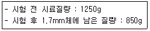
- 68%
- 47%
- 53%
- 32%
(정답률: 41%)
16. 잔골재의 절대건조상태 중량이 300g, 흡수율 10%, 표면수율 5%일 때 표면건조포화상태 중량과 습윤상태 중량은 각각 얼마인가?
- 표면건조포화상태 중량=310g, 습윤상태 중량=325.5g
- 표면건조포화상태 중량=330g, 습윤상태 중량=346.5g
- 표면건조포화상태 중량=310g, 습윤상태 중량=349.5g
- 표면건조포화상태 중량=330g, 습윤상태 중량=351.5g
(정답률: 71%)
17. 30회 이상의 압축강도시험 실적으로부터 구한 압축강도의 표준편차가 5MPa이고, 콘크리트의 설계기준 압축강도가 45MPa인 경우 배합강도는?
- 50MPa
- 51.7MPa
- 52.15MPa
- 53.15MPa
(정답률: 53%)
18. 보통 포틀랜트 시멘트를 사용하여 재령 28일의 시멘트 모르타르 압축강도 시험(KS L ISO 6779)을 실시한 결과가 아래의 표와 같다. 이 시멘트 모르타르의 압축강도를 판별하면?
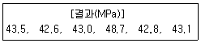
- 44.0MPa
- 43.0MPa
- 42.1MPa
- 결과값 전체를 버리고 재시험을 실시한다.
(정답률: 62%)
19. 콘크리트용 화학혼화제(공기연행제, 공기연행감수제, 고성능 공기연행감수제)의 성능을 확인하기 위한 콘크리트 시험에서 길이변화비(%)를 구하는 데 적용되는 기간은?
- 28일
- 3개월
- 6개월
- 1년
(정답률: 40%)
20. 시멘트의 종류에 따른 특성에 대한 설명으로 틀린 것은?
- 조강 포틀랜드 시멘트는 보통 포틀랜드 시멘트보다 C3S의 함유량을 높이고 C2S를 줄이는 동시에 분말도를 높게 하여 초기강도를 크게 한 시멘트이다.
- 실리카 시멘트는 보통 포틀랜드 시멘트와 비교하여 수밀성은 좋지만 화학저항성 및 내구성은 떨어진다.
- 중용열 포틀랜드 시멘트는 수화작용에 따르는 발열이 작아 매스 콘크리트에 적당하다.
- 고로슬래그 시멘트는 보통 포틀랜드 시멘트보다 내화학약품성이 우수하여 해수, 공장폐수, 하수 등에 접하는 콘크리트에 적합하다.
(정답률: 56%)
2과목: 제조, 시험 및 품질관리
21. 콘크리트의 블리딩을 증가시키는 요인으로 적합하지 않은 것은?
- 단위수량의 증가
- 시멘트 분말도의 증가
- 콘크리트 공기량의 저하
- 콘크리트 온도의 저하
(정답률: 45%)
22. 콘크리트의 탄산화에 대한 설명으로 틀린 것은?
- 페놀프탈레인 1% 에탄올 용액을 분사시키면 알칼리 부분은 변색하지 않지만 탄산화된 부분은 붉은 보라색으로 변한다.
- 콘크리트의 수화 반응에서 생성되는 강알칼리성 수산화칼슘이 공기 중의 이산화탄소와 결합 후 탄산칼슘으로 변하여 알칼리성이 약해지는 현상을 탄산화라 한다.
- 탄산화의 진행속도는 시간의 제곱근에 비례한다.
- 탄산화를 방지하기 위해서는 양질의 골재를 사용하고 물-시멘트비를 작게 하는 것이 좋다.
(정답률: 54%)
23. 콘크리트의 품질관리를 위한 다음 관리도 중 적용이론이 이항분포에 근거한 것은?
- x 관리도
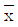
관리도- p 관리도
- u 관리도
(정답률: 58%)
24. 콘크리트 자재 품질관리 및 제조공정에 있어서의 검사항목 중 시험 횟수가 잘못된 것은?
- 천연 잔골재의 물리ㆍ화학적 안정성(알칼리 실리카 반응성):공사시작 전, 공사 중 1회/6개월 이상 및 산지가 바뀐 경우
- 잔골재의 표면수율:1회/일 이상
- 계량설비의 계량 정밀도:공사시작 전 및 공사 중 1회/6개월 이상
- 시멘트의 품질:공사 시작 전, 공사 중 1회/월 이상 및 장기간 저장한 경우
(정답률: 78%)
25. 아래 표와 같은 레디믹스트 콘크리트 주문 규격에서 호칭강도는 얼마인가?
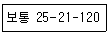
- 25MPa
- 21MPa
- 120MPa
- 180MPa
(정답률: 73%)
26. 콘크리트의 슬럼프 시험 방법에 대한 설명으로 틀린 것은?
- 슬럼프콘은 윗면의 안지름이 100mm, 밑면의 안지름이 200mm, 높이 300mm 및 두께 1.5mm이상인 금속체로 한다.
- 슬럼프콘에 시료를 넣고 각 층을 다질 때 다짐봉의 깊이는 그 앞층에서 약 50mm 정도의 길이로 들어가도록 다진다.
- 슬럼프콘에 콘크리트를 채우기 시작하고 나서 슬럼프콘의 들어 올리기를 종료할 때까지의 시간은 3분 이내로 한다.
- 슬럼프콘을 들어 올리는 시간은 높이 300mm에서 2~3초로 한다.
(정답률: 59%)
27. 콘크리트의 받아들이기 품질검사에 대한 설명으로 틀린 것은?
- 워커빌리티의 검사는 굵은 골재 최대 치수 및 슬럼프가 설정치를 만족하는지의 여부를 확인함과 동시에 재료 분리 저항성을 외관 관찰에 의해 확인하여야 한다.
- 강도검사는 콘크리트의 배합검사를 실시하는 것으로 한다.
- 내구성 검사는 공기량, 염소이온량을 측정하는 것으로 한다.
- 검사 결과 불합격으로 판정된 콘크리트는 현장에서 혼화재료 및 수량의 첨가 등 적절한 조치를 취한 후 사용하는 것을 원칙으로 한다.
(정답률: 72%)
28. 반발경도 시험에 사용되는 테스트 해머의 종류에 따른 적용 콘크리트로 틀린 것은?
- N형-보통 콘크리트용
- L형-경량 콘크리트용
- M형-매스 콘크리트용
- P형-고강도 콘크리트용
(정답률: 52%)
29. 일정량의 AE제를 사용한 경우에 굳지 않은 콘크리트의 공기량에 대한 설명이 잘못된 것은?
- 콘크리트의 비빔시간을 5분 이상 지속하면 공기량은 증가한다.
- 혼합수의 pH가 낮고 산성이거나 불순물이 많으면 공기량은 감소한다.
- 단위 잔골재량이 많을수록 공기량은 증가한다.
- 콘크리트의 온도가 높을수록 공기량은 감소한다.
(정답률: 46%)
30. 압력법에 의한 콘크리트의 공기량 시험 결과 겉보기 공기량이 7%, 골재의 수정계수가 2.4%, 사용하는 잔골재의 질량이 2kg일 때, 이 콘크리트의 공기량은?
- 2.2%
- 2.6%
- 3.8%
- 4.6%
(정답률: 60%)
31. 콘크리트를 펌프 압송하는 경우 관내 압력은 관을 따라서 점차 감소되는데, 다음 설명 중 틀린 것은?
- 슬럼프값이 작을수록 관내 압력 손실은 커진다.
- 수송관이 직경이 작을수록 관내 압력 손실을 커진다.
- 토출량이 적을수록 관내 압력 손실은 커진다.
- 굵은골재 최대 치수가 커질수록 관내 압력 손실은 커진다.
(정답률: 48%)
32. 콘크리트의 내동해성에 관한 설명으로 틀린 것은?
- 공기량이 동일한 경우 기포간격 계수(spacing factor)가 클수록 내동해성이 향상된다.
- 연행공기는 내동해성 향상에 효과적이다.
- 흡수율이 큰 연석은 동결 시 팝 아웃(Pop-out)을 유발시킨다.
- 내동해성은 동결융해를 반복한 공시체의 동탄성계수에 의해 평가할 수 있다.
(정답률: 47%)
33. 아래의 표에서 설명하는 워커빌리티 측정방법은?
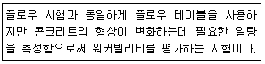
- 리몰딩 시험
- 다짐계수 시험
- 보관입 시험
- 슬럼프 시험
(정답률: 63%)
34. 지름 150mm, 높이 300mm의 원주형 공시체를 사용하여 쪼갬 인장강도 시험을 한 결과 최대하중이 250kN이라면 이 콘크리트의 쪼갬 인장강도는?
- 2.12MPa
- 2.53MPa
- 3.22MPa
- 3.54MPa
(정답률: 69%)
35. 콘크리트의 건조수축에 관한 설명으로 틀린 것은?
- 플라이 애시를 혼입한 경우는 일반적으로 건조수축이 감소한다.
- 건조수축의 주원인은 콘크리트가 수화작용을 하고 남은 물이 증발하기 때문이다.
- 콘크리트의 단위수량이 많을수록 건조수축이 작게 일어난다.
- 염화칼슘을 혼입한 경우는 일반적으로 건조수축이 증가한다.
(정답률: 74%)
36. 콘크리트의 강도시험에 대한 설명으로 틀린 것은?
- 압축강도 시험을 위한 공시체는 지름의 2배 높이를 가진 원기둥형으로 하며, 그 지름은 굵은 골재의 최대치수의 3배 이상, 100mm 이상으로 한다.
- 공시체 몰드의 떼는 시기는 채우기가 끝나고 나서 16시간 이상 3일 이내로 한다.
- 휨강도 시험에서 공시체에 하중을 가하는 속도는 압축응력도의 증가율이 매초(0.6±0.4)MPa이 되도록 한다.
- 휨강도 시험용 공시체를 제작할 때 다짐봉을 이용하여 콘크리트를 몰드에 채울 경우는 2층 이상의 거의 같은 층으로 나누어 채운다.
(정답률: 78%)
37. 콘크리트의 배합설계 결과 단위 시멘트량이 350kg/m3인 경우 1배치가 3m3인 믹서에서 시멘트의 1회 계량값이 1031kg일 때, 계량오차에 대한 판정결과로 옳은 것은?
- 허용 계량오차의 한계인 -1% 이내이므로 합격
- 허용 계량오차의 한계인 -1% 초과하므로 불합격
- 허용 계량오차의 한계인 -2% 이내이므로 합격
- 허용 계량오차의 한계인 -2% 초과하므로 불합격
(정답률: 53%)
38. 콘크리트의 재료의 계량에 대한 설명으로 틀린 것은?
- 1배치량은 콘크리트의 종류, 비비기 설비의 성능, 운반방법, 공사의 종류, 콘크리트의 타설량 등을 고려하여 정하여야 한다.
- 각 재료는 1배치씩 용적으로 계량하는 것을 원칙으로 한다. 다만, 물과 혼화재는 질량으로 계량해도 좋다.
- 소규모 공사에서 시멘트나 혼화재가 포대로 공급되고, 1포대의 질량이 소정량 이상인 경우에는 포대단위로 계량해도 좋다.
- 계량은 현장 배합에 의해 실시하는 것으로 한다.
(정답률: 59%)
39. 레디믹스트 콘크리트 공장의 선정 또는 설치에 대한 설명으로 틀린 것은?
- 현장여건의 변동이 발생했을 때 반드시 레디믹스트 콘크리트 공장을 적정한 위치에 재설치하여야 한다.
- KS F 4009의 규정 및 심사기준을 참고로 하여 사용재료, 제 설비, 품질관리 상태 등을 조사하여 사용목적에 맞는 공장을 선정하거나 설치하여야 한다.
- 단일 구조물, 동일 공구에 타설하는 콘크리트는 가능한 1개의 공장의 레드믹스트 콘크리트를 사용해야 한다.
- 동일 공구에 부득이하게 2개 이상의 공장을 선정하는 경우 품질관리계획서에 의해 동일한 성능이 확보되도록 책임기술자가 확인하여야 한다.
(정답률: 59%)
40. 콘크리트에 관한 설명으로 옳지 않은 것은?
- 슬럼프가 지나치게 크면 재료분리, 블리딩 및 레이턴스가 많이 발생된다.
- 일반콘크리트의 단위 수량은 작업이 가능한 범위 내에서 될 수 있는 대로 적게 되도록 시험을 통해 정한다.
- 일반적으로 쇄석을 사용하면 보통 콘크리트와 동일한 슬럼프를 얻기 위한 단위수량이 많이 요구되므로 AE제, 감수제 등을 사용하는 것이 바람직하다.
- 슬럼프값이 크면 클수록 워커빌리티가 좋다.
(정답률: 60%)
3과목: 콘크리트의 시공
41. 방사선 차폐용 콘크리트의 제조에 사용되는 재료들에 대한 설명으로 틀린 것은?
- 시멘트는 수화열 발생이나 건조수축이 작은 종류를 선택하여야 한다.
- 방사선 차폐효과를 높일 수 있도록 가급적 알칼리 농도가 높은 시멘트를 사용한다.
- 실험용 원자로의 관망용 창문이나 차폐구조물의 두께를 작게 해야 할 경우에는 중량골재를 사용한다.
- 광물질혼화재가 혼합된 고로시멘트, 실리카시멘트, 플라이애시시멘트를 사용해도 무방하다.
(정답률: 50%)
42. 다음 중 한중콘크리트에 대한 설명으로 적합하지 않은 것은?
- 하루의 최저 기온이 0℃ 이하가 되는 조건일 때는 한중콘크리트로 시공하여야 한다.
- 재료를 가열할 경우, 물 또는 골재를 가열하는 것으로 하며, 시멘트는 어떠한 경우라도 직접 가열할 수 없다.
- 한중콘크리트에는 공기연행 콘크리트를 사용하는 것을 원칙으로 한다.
- 물-결합재비는 원칙적으로 60% 이하로 하여야 한다.
(정답률: 65%)
43. 수밀 콘크리트의 배합에 대한 설명으로 틀린 것은?
- 슬럼프는 180mm를 넘지 않게 하며, 콘크리트 타설이 용이할 때에는 120mm 이하로 한다.
- 공기연행감수제 또는 고성능 공기연행감수제를 사용하는 경우라도 공기량은 4% 이하가 되게 한다.
- 물-결합재비는 50% 이하를 표준으로 한다.
- 단위수량 및 물-결합재비는 되도록 적게 하고, 단위 굵은 골재량은 가능한 작게하여야 한다.
(정답률: 64%)
44. 콘크리트 공장제품의 장점에 해당되지 않는 것은?
- 조립구조에 주로 사용되므로 공사기간이 단축된다.
- 현장에서 거푸집이나 동바리 등의 준비가 필요 없다.
- 규격품을 제조하므로 숙련공을 필요로 하지 않는다.
- 기후상황에 좌우되지 않고 시공을 할 수 있다.
(정답률: 69%)
45. 고유동 콘크리트의 자기 충전 등급에 대한 설명으로 틀린 것은?
- 고유동 콘크리트의 자기 충전성 거푸집에 타설하기 직전의 콘크리트에 대하여 타설 대상 구조물의 형상, 치수, 배근상태를 고려하여 적절히 설정한다.
- 고유동 콘크리트의 자기 충전성 1등급은 최소 철근 순간격 35~60mm 정도의 복잡한 단면형상, 단면치수가 작은 부재 또는 부위에서 자기 충전성을 가지는 성능이다.
- 고유동 콘크리트의 자기 충전선 2등급은 최소 철근 순간격 200MM 정도 이상으로 단면치수가 크고 철근량이 적은 부재 또는 부위, 무근 콘크리트 구조물에서 자기 충전성을 가지는 성능이다.
- 일반적인 철근콘크리트 구조물 또는 부재는 자기 충전성 등급을 2등급으로 정하는 것을 표준으로 한다.
(정답률: 48%)
46. 고강도 콘크리트에 대한 설명으로 틀린 것은?
- 가경식 믹서보다는 강제식 팬 믹서 사용이 바람직하다.
- 굵은 골재의 최대 치수는 25mm 이상으로서 가능한 40mm 이상으로 한다.
- 일반적으로 공기연행제를 사용하지 않는 것을 원칙으로 한다.
- 잔공재율은 소요의 워커빌리티를 얻도록 시험에 의하여 결정하여야 하며, 가능한 작게 한다.
(정답률: 57%)
47. 팽창 콘크리트의 품질에 대한 설명으로 틀린 것은?
- 팽창률은 일반적으로 재령 7일에 대한 시험값을 기준으로 한다.
- 팽창 콘크리트의 강도는 일반적으로 재령 14일의 압축강도를 기준으로 한다.
- 화학적 프리스트레스용 콘크리트의 팽창률은 200×10-6 이하를 표준으로 한다.
- 수축보상용 콘크리트의 팽창률은 150×10-6 이상, 250×10-6 이하인 값을 표준으로 한다.
(정답률: 50%)
48. 신축이음에 대한 설명 중 틀린 것은?
- 신축이음에는 필요에 따라 이음재, 지수판 등을 배치하여야 한다.
- 신축이음은 양쪽의 구조물 혹은 부재가 구속된 구조이어야 한다.
- 신축이음의 단차를 피할 필요가 있는 경우에는 장부나 홈을 두는 것이 좋다.
- 신축이음의 단차를 피할 필요가 있는 경우에는 전단연결재를 사용하는 것이 좋다.
(정답률: 49%)
49. 고강도 콘크리트와 일반콘크리트의 특성을 비교하여 설명한 것으로 틀린 것은?
- 고강도 콘크리트는 일반콘크리트에 비해 비빈 후 시간 경과함에 따라 슬럼프 값 저하가 적다.
- 고강도 콘크리트는 일반콘크리트에 비해 타설 시 유동성이 좋다.
- 고강도 콘크리트는 일반콘크리트에 비해 점성이 높다.
- 고강도 콘크리트는 일반콘크리트에 비해 재료분리 발생 가능성이 낮다.
(정답률: 37%)
50. 숏크리트의 강도에 대한 설명으로 틀린 것은?
- 일반적인 경우 재령 3시간에서 숏크리트의 초기강도는 1.0~3.0MPa을 표준으로 한다.
- 일반적인 경우 재령 24시간에서 숏크리트의 초기강도는 5.0~10.0MPa을 표준으로 한다.
- 일반 숏크리트의 장기 설계기준 압축강도는 28일로 설정하며 그 값은 21MPa 이상으로 한다.
- 영구 지보재로 숏크리트를 적용할 경우 재령 28일의 부착강도는 4.0MPa 이상이 되도록 관리하여야 한다.
(정답률: 67%)
51. 슬래브 및 보의 밑면, 아치 내면의 거푸집은 콘크리트 압축강도가 최소 몇 MPa 이상인 경우 해체 가능한가? (단, 콘크리트의 설계기준 압축강도가 24MPa인 경우) (문제 오류로 가답안 발표시 3번으로 발표되었지만 확정답안 발표시 3, 4번이 정답처리 되었습니다. 여기서는 가답안인 3번을 누르면 정답 처리 됩니다.)
- 5MPa
- 14MPa
- 16MPa
- 24MPa
(정답률: 70%)
52. 일반 수중콘크리트의 시공에서 트레미에 의한 타설을 설명한 것으로 틀린 것은?
- 트래미는 수밀성을 가지며 콘크리트가 자유롭게 낙하할 수 있는 크기를 가져야 하므로, 트레미의 안지름은 굵은 골재 최대치수의 8배 이상이 되도록 하여야 한다.
- 트레미의 하단에서 유출되는 콘크리트를 수중에서 멀리 유동시키면 품질이 저하되므로 트레미 1개로 타설할 수 있는 면적이 지나치게 크지 않도록 하여야 하며, 30m2 이하로 하여야 한다.
- 트레미는 콘크리트를 타설하는 동안 5분에 1회씩 하반부에 채워져 있는 콘크리트를 비워 트레미 속으로 물을 유입한 후 트레미 속의 공기를 배출하도록 하여야 하며, 트레미는 콘크리트를 타설하는 동안 수평으로만 이동하여야 한다.
- 콘크리트를 수중 낙하시키면 재료 분리가 심하게 생기기 때문에 콘크리트를 타설할 때에 트레미의 선단부분에 밑뚜껑이 있는 것을 사용하거나 플란저를 설치하는 등의 대책을 취하여야 한다.
(정답률: 44%)
53. 매스콘크리트(mass concrete)에 대한 설명으로 틀린 것은?
- 가급적 슬럼프값을 크게 하여 작업성을 높인다.
- 굵은 골재의 최대치수는 되도록 큰 값을 사용하여야 한다.
- 콘크리트의 온도상승을 억제하기 위한 냉각조치를 취한다.
- 온도 상승은 단위 시멘트량 10kg/m3의 증가에 따라 약 1℃ 증가한다.
(정답률: 55%)
54. 서중콘크리트 시공에 대한 설명으로 틀린 것은?
- 비빈 콘크리트는 가열되거나 건조해져서 슬럼프가 저하하지 않도록 적당한 장치를 사용하여 되도록 빨리 운송하여 타설하여야 한다.
- 펌프로 운반할 경우에는 관을 젖은 천으로 덮어야 한다.
- 콘크리트는 비빈 후 즉시 타설하여야 하며, 자연형 감수제를 사용하는 등의 일반적인 대책을 강구한 경우라도 1.5시간 이내에 타설하여야 한다.
- 콘크리트를 타설할 때의 콘크리트 온도응 45℃ 이하이어야 한다.
(정답률: 54%)
55. 일반 콘크리트에서 균열의 제어를 목적으로 균열유발 이음을 설치할 경우 이음의 간격 및 단면의 결손율에 대한 설명으로 옳은 것은?
- 균열유발 이음의 간격은 0.5~1m 이내로 하고 단면의 결손율은 30%를 약간 넘을 정도로 하는 것이 좋다.
- 균열유발 이음의 간격은 부재높이의 1배 이상에서 2배 이내 정도로 하고 단면의 결손율은 20%를 약간 넘을 정도로 하는 것이 좋다.
- 균열유발 이음의 간격은 1~2mm 이내로 하고 단면의 결손율은 20%를 약간 넘을 정도로 하는 것이 좋다.
- 균열유발 이음의 간격은 부재높이의 2배 이상에서 3배 이내 정도로 하고, 단면의 결손율은 30%를 약간 넘을 정도로 하는 것이 좋다.
(정답률: 32%)
56. 수중콘크리트에 대한 아래 표의 설명에서 ()에 알맞은 것은?
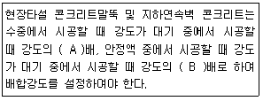
- A:0.8, B:0.7
- A:0.7, B:0.8
- A:0.7, B:0.7
- A:0.6, B:0.9
(정답률: 62%)
57. 일평균 기온이 15℃ 이상일 때 일반 콘크리트 습윤 양생기간의 표준으로 옳은 것은? (단, 보통포틀랜드시멘트-고로슬래그시멘트-조강포틀랜드시멘트를 사용한 콘크리트의 순서)
- 5일-7일-3일
- 7일-5일-3일
- 7일-9일-4일
- 9일-7일-4일
(정답률: 65%)
58. 콘크리트의 표면마무리에 관련된 설명으로 틀린 것은?
- 노출콘크리트에서 균일한 노출면을 얻기 위해서는 동일 공장제품의 시멘트, 동일 종류 및 입도를 갖는 골재, 동일하게 배합된 콘크리트, 동일한 타설 방법을 사용하여야 한다.
- 미리 정해진 구획의 콘크리트 타설은 연속해서 일괄작업으로 끝마쳐야 한다.
- 시공이음이 미리 정해져 있지 않을 경우에는 직선상의 이음이 얻어지도록 시공하여야 한다.
- 미무리 작업 후 콘크리트가 굳기 시작할 때까지의 사이에 균열이 발생하더라도 다짐을 하여서는 안 된다.
(정답률: 73%)
59. 일반적인 경우의 콘크리트 제품을 상압증기양생 하고자 할 때 콘크리트를 비빈 후 어느 정도의 시간이 경과한 후 양생을 실시하는 것이 바람직한가?
- 30분 이내
- 30분~1시간 이후
- 2~3시간
- 12시간 이후
(정답률: 50%)
60. 댐 콘크리트의 관로식 냉각(pipe cooling)에 대한 일반적인 설명으로 옳지 않은 것은?
- 냉각관은 보통 바깥지름 25mm 정도의 강관을 주로 사용한다.
- 통수기간은 일반적으로 2~4주 정도이다.
- 일반적으로 냉각관 1코일의 길이는 200~300mm 정도로 한다.
- 냉각효율의 증대를 위해 통수량은 1코일당 매분 30ℓ 이상으로 한다.
(정답률: 57%)
4과목: 구조 및 유지관리
61. 아래의 표에서 설명하고 있는 균열의 보수기법은?
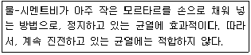
- 짜깁기법
- 폴리머 침투
- 에폭시 침투
- 드라이 패킹
(정답률: 47%)
62. 아래 그림과 같은 직사각형 단면의 보에서 휨에 대한 강도감소계수(ø)를 구하면? (단, fck=28MPa, fy350MPa, As=3000mm2이고, 변형률(ε)은 소수점이하 6째자리에서 반올림하시오.)
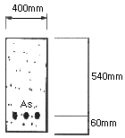
- 0.808
- 0.823
- 0.835
- 0.85
(정답률: 49%)
63. 아래 그림과 같은 복철근 직사각형보에서 공칭휨강도(Mn)는 약 얼마인가? (단, fck=35MPa, fy=350MPa, b=300mm, d=460mm, d'=60mm, As=4,765mm2, As'=1,284mm2이다.)
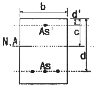
- 657kNㆍm
- 757kNㆍm
- 857kNㆍm
- 957kNㆍm
(정답률: 22%)
64. 경간 20m에 등분포하중(자중포함) 20kN/m가 작용하는 프리스트레스 콘크리트 보에 P=2000kN의 긴장력이 주어질 때, 하중 평형개념에 의해 계산된 이 보의 순하량 분포하중은? (단, 긴장재는 포물선으로 배치되어 있으며, 새그는 200mm이다.)
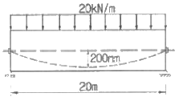
- 8kN/m
- 12kN/m
- 16kN/m
- 20kN/m
(정답률: 41%)
65. 옹벽의 설계 및 구조해석에 대한 설명으로 틀린 것은?
- 무근콘크리트 옹벽은 자중에 의하여 저항력을 발휘하는 중력식 형태로 설계하여야 한다.
- 옹벽의 뒷부벽은 직사각형보로 설계하여야 한다.
- 활동에 대한 저항력은 옹벽에 작용하는 수평력의 1.5배 이상이어야 한다.
- 캔틸레버식 옹벽의 전면벽은 저판에 지지된 캔틸레버로 설계할 수 있다.
(정답률: 31%)
66. 알칼리-실리카 반응의 가능성을 예상하기 위해 콘크리트 중 알칼리량을 측정하는 시험방법에 속하지 않는 것은?
- 암석화적 시험법
- 화학법
- 모르타르 방법
- 초음파법
(정답률: 52%)
67. 경간 10m의 보를 대칭 T형보로 설계하려고 한다. 슬래브 중심간의 거리를 2m, 슬래브의 두께를 120mm, 복부의 폭을 250mm로 할 때 플랜지의 유효폭은?(오류 신고가 접수된 문제입니다. 반드시 정답과 해설을 확인하시기 바랍니다.)
- 4000mm
- 3750mm
- 2170mm
- 2000mm
(정답률: 33%)
68. 직접 설계법에 의한 슬래브 설계에서 전체 정적 계수 휨모멘트 Mo=320kNㆍm로 계산되었을 때, 내부 경간의 정계수 휨모멘트는 얼마인가?
- 300kN/m
- 208kN/m
- 168kN/m
- 112kN/m
(정답률: 40%)
69. 다음 중 아래의 표에서 설명하는 최소 전단철근 규정에 제외되는 경우가 아닌 것은?
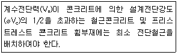
- 슬래브
- 기초판
- 전체 깊이가 250mm를 초과하는 보
- 교대 벽체 및 날개벽과 같이 휨이 주거동인 판부재
(정답률: 42%)
70. 육안관찰이 가능한 개소에 대하여 성능 저하나 열화 및 하자의 발생부위 파악을 위해 실시하며, 시설물의 전반적인 외관조사를 통하여 심각한 손상인 결함의 유무를 살펴보는 점검은?
- 정밀안전진단
- 정밀점검
- 정기점검
- 긴급점검
(정답률: 58%)
71. 다음 중 콘크리트 타설 후의 결함과 그 대책으로 가장 거리가 먼 것은?
- 초기강도 부족-타설 후 콘크리트에 충분한 수분을 공급하고, 시트를 덮어 일정한 온도를 유지한다.
- 콜드조인트-콘크리트 타설을 가능한 중단하지 않고 연속적으로 타설한다.
- 침강균열-콘크리트의 단위수량을 크게 하고 타설속도를 빨리 한다.
- 골재노출-콘크리트의 재료가 분리되지 않도록 낮은 위치에서 평균적으로 낙하시킨다.
(정답률: 67%)
72. 콘크리트 구조물의 탄산화 깊이(X)를 예측할 때 일반적으로 적용되고 있는 식으로 옳은 것은? (단, A:탄산화 속도계수, t:경과년수)
- X=At3
- X=At2
- X=A√t
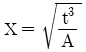
(정답률: 76%)
73. 길이 4m의 캔틸레버 보에서 처짐을 계산하지 않는 경우 보의 최소 두께는? (단, 보통중량콘크리트(mo=2300kg/m3)를 사용하고, fck=350MPa, fy=350MPa인 경우)
- 435mm
- 465mm
- 500mm
- 525mm
(정답률: 39%)
74. 그림과 같은 T형보를 강도설계법에 의해 설계할 때 응력사각형의 깊이(a)는? (단, As=6354mm2, fck=27MPa, fy=400MPa)
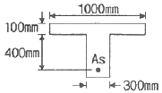
- 95.6mm
- 135.8mm
- 155.6mm
- 185.8mm
(정답률: 33%)
75. 다음 중 구조물의 사용성 평가를 조사항목과 방법을 잘못 설명한 것은?
- 잔류처짐, 최대처짐-재하시험에 의해 최대처짐과 재하 후의 잔류처짐을 측정
- 균열깊이-스케일, 화상처리
- 균열깊이-초음파법, 코어채취
- 내수성-스케일, 탄성파 방사파법, 탄성파 공진법
(정답률: 34%)
76. 보강공법 중에서 외부 케이블 공법의 특징에 대한 설명 중 옳지 않은 것은?
- 콘크리트의 강도 부족이나 열화에 대해서 효과가 크다.
- 보강효과가 역학적으로 명확하다.
- 보강 후의 유지ㆍ관리가 비교적 용이하다.
- 편향부를 전단보강부에 설치하고, 외부케이블의 연직분력을 고려함으로써 설계전단력을 크게 감소시킬 수 있다.
(정답률: 50%)
77. 지름이 400mm인 원형나선 철근기둥이 그림과 같이 축방향철근 6-D25이며, 나선철근 D13이 50mm 피치로 둘러싸여 있다. fck=35MPa, fy=400MPa일 때, 길이가 짧은 단주기둥의 최대 설계축하중강도(øPn)를 구하면? (단, ø는 0.7이고, D25 철근 1개의 단면적은 506.7mm2)
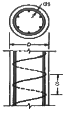
- 2126kN
- 2894kN
- 3891kN
- 4864kN
(정답률: 40%)
78. 발생된 손상이 안전성에 심각한 영향을 주지 않는다고 판단되면 보수 조치를 시행하는데, 다음의 조치 중 보수에 해당하는 것은?
- 주입공법
- 강판 접착공법
- 외부 케이블공법
- 보강섬유 접착공법
(정답률: 53%)
79. 반발경도법에 의한 콘크리트 압축강도 추정에서 주로 슈미트 해머를 많이 사용한다. 이 해머 사용 전에 검교정을 위해 사용하는 기구의 명칭은?
- 테스트 앤빌(test anvil)
- 스트레인 게이지(strin bauge)
- 변위계(displacement transducer)
- 캘리브레이션 바(calibration bar)
(정답률: 54%)
80. 콘크리트 중 염화물이온 함유량 측정방법으로 옳지 않은 것은?
- 페놀프탈레인법
- 모아법
- 염화은 침전법
- 전위차 적정법
(정답률: 58%)